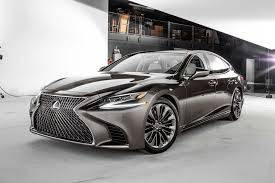
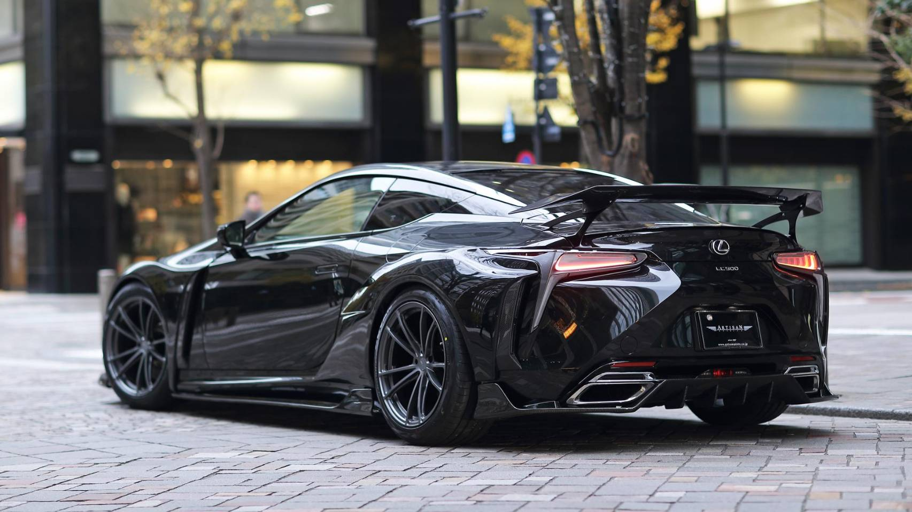

第五代全新LS呈現前衛設計風格、寬敞的車室空間、奢華的鋪陳及多項前瞻科技，為豪華旗艦級距重新設下標竿，並再次讓消費者為之驚艷。
延續歷代LS的「YET」設計哲學，Lexus創造出三廂豪華轎跑應有的空間以及舒適，卻同時擁有四門Coupe跑車的優美線條；
並採用了側窗玻璃整合B柱的極簡設計來強化LS更低、更流線的輪廓，以吸引更年輕的豪華車客群。

Lexus LC以更精緻的鍍鉻紡錘型水箱護罩演繹家族式外觀，晶透卻內蘊鋒芒的頭燈造型，在霸氣中更顯優雅洗鍊。
行進間隨著速度而升起的主動式後導流尾翼，宣示LC的熱情魅力，也鼓動駕馭者的操控欲望；
而不論是外凸的前後輪拱，或是位於後輪前方的車側導流進氣口，更充分展現LC身為Grand Tourer旗艦的狂野風華。

連到首頁
連到第3頁
連到第4頁
連到第5頁